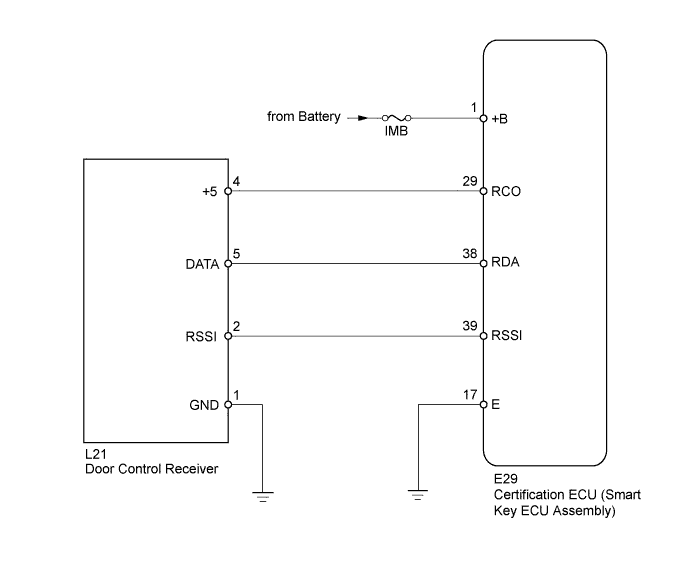
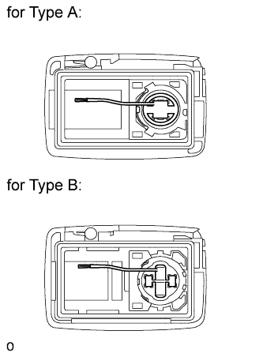
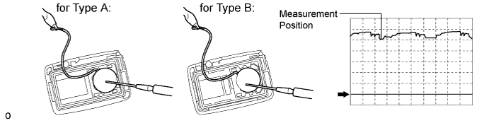
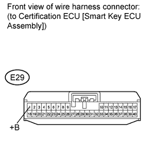
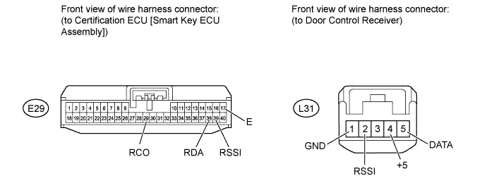

ENTRY AND START SYSTEM (for Entry Function) > All Door Entry Lock/Unlock Functions and Wireless Functions do not Operate |

| 1.CHECK POWER DOOR LOCK CONTROL SYSTEM |
When the master switch door control switch is operated, check that the locked doors unlock (Click here).
|
| ||||
| OK | |
| 2.CHECK DOOR CONTROL TRANSMITTER |
When another registered door control transmitter is used, check that the wireless and entry function operates normally (Click here).
| Result | Proceed to |
| Entry function operates and door control transmitter that did not operate is electrical key transmitter | A |
| Entry function does not operate | B |
|
| ||||
| A | |
| 3.CHECK DOOR CONTROL TRANSMITTER (LED) |
Check that the transmitter LED illuminates 3 times when a switch is pressed 3 times.
| Result | Proceed to |
| Transmitter LED does not illuminate 3 times when switch is pressed 3 times | A |
| Transmitter LED illuminates 3 times when switch is pressed 3 times | B |
| Transmitter LED does not illuminate second or third time | C |
|
| ||||
|
| ||||
| A | |
| 4.INSPECT TRANSMITTER BATTERY (VOLTAGE) |
Electrical key transmitter
 |
Remove the battery from the electrical key transmitter that does not operate. Attach a lead wire (0.6 mm (0.0236 in.) or less in diameter including wire sheath) with tape or equivalent to the negative terminal (Click here).
Carefully pull the lead wire out from the position shown in the illustration and install the previously removed transmitter battery.
Using an oscilloscope, check the transmitter battery voltage waveform.

| Tester Connection | Tool Setting | Condition | Specified Condition |
| Battery positive (+) - Battery negative (-) | 0.5 V/DIV., 100 ms/DIV. | Engine switch off, all doors closed and lock switch pushed | 2.5 to 3.2 V (Refer to the waveform) |
|
| ||||
| OK | ||
| ||
| 5.CHECK WAVE ENVIRONMENT |
Bring the door control transmitter near the door control receiver, and perform a wireless and entry function operation check.
|
| ||||
| OK | ||
| ||
| 6.INSPECT FUSE (IMB) |
Remove the IMB fuse from the engine room relay block.
Measure the resistance according to the value(s) in the table below.
| Tester Connection | Condition | Specified Condition |
| IMB fuse | Always | Below 1 Ω |
|
| ||||
| OK | |
| 7.CHECK HARNESS AND CONNECTOR (CERTIFICATION ECU [SMART KEY ECU ASSEMBLY] - BATTERY) |
 |
Disconnect the E29 ECU connector.
Measure the voltage according to the value(s) in the tables below.
| Tester Connection | Condition | Specified Condition |
| E29-1 (+B) - Body ground | Always | 11 to 14 V |
|
| ||||
| OK | |
| 8.CHECK HARNESS AND CONNECTOR (CERTIFICATION ECU [SMART KEY ECU ASSEMBLY] - DOOR CONTROL RECEIVER AND BODY GROUND) |

Disconnect the L31 receiver connector.
Disconnect the E29 ECU connector.
Measure the resistance according to the value(s) in the table below.
| Tester Connection | Condition | Specified Condition |
| E29-29 (RCO) - L31-4 (+5) | Always | Below 1 Ω |
| E29-38 (RDA) - L31-5 (DATA) | Always | Below 1 Ω |
| E29-39 (RSSI) - L31-2 (RSSI) | Always | Below 1 Ω |
| E29-17(E) - Body ground | Always | Below 1 Ω |
| L31-1 (GND) - Body ground | Always | Below 1 Ω |
| E29-29 (RCO) or L31-4 (+5) - Body ground | Always | 10 kΩ or higher |
| E29-38 (RDA) or L31-5 (DATA) - Body ground | Always | 10 kΩ or higher |
| E29-39 (RSSI) or L31-2 (RSSI) - Body ground | Always | 10 kΩ or higher |
|
| ||||
| OK | |
| 9.CHECK DOOR CONTROL RECEIVER (OPERATION) |
Temporarily replace the door control receiver with a new one (Click here).
Check that the wireless and entry functions operate normally.
|
| ||||
| OK | ||
| ||